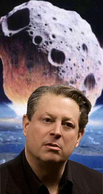

Al Gore
 De: La Frikipedia, la enciclopedia extremadamente seria.
De: La Frikipedia, la enciclopedia extremadamente seria.
De la serie grandes personajes:
| Nacimiento
|
1948?
|
| Muerte
|
Morirá en 2012 según sus profecías
|
| Ocupación
|
Ecoterrorista
|
| Nacionalidad
|
Ruso
|
| Malo o bueno
|
Malo del cagar
|
| Atentados contra la humanidad
|
Crear "Una Verdad Incómoda"
|
| Religión
|
Cienciología y Ecologismo
|
| Notas
|
Individuo que más contamina en USA
|
Nacido en Washington D.C. el 31 de marzo de 1948. Es un profeta y ecolojeta que se dedica a vaticinar la llegada del fin del mundo total y absoluto por culpa de la contaminación de los seres humanos.
Hechos de Al Gore
- Entre 1993 y 2000 fue vicepresidente de los EE.UU. bajo el mandato de Bill Clinton Alias “El Puro de Clinton”.
- En 2000 perdió las elecciones para la presidencia de EE.UU., que ganó George Walker Texas Ranger Bush. Su derrota supuso un punto de inflexión en la historia de la humanidad, ya que se esperaba que Al Gore ganara de calle y estableciera un periodo de paz y prosperidad como nunca antes había existido en la Tierra. Pero su falta de carisma le llevó a la derrota total.
- En 2006 (viendo que estaba muy de moda eso del cambio climático y que daba unas subvenciones muy interesantes…) decidió hacer una película catastrofista tipo Armaggedon. En esa película él era el protagonista absoluto, se pasaba hora y media profetizando el fin del mundo (con el apoyo de gráficos CGI de su apple mac portátil) y que si no se hacia lo que él decía todos íbamos a morir de las peores formas imaginables. La película se tituló “Una verdad Incómoda” y recaudo millones de dólares que fueron a parar al bolsillo de Al Gore.
- En 2007 recibe el premio Nóbel de la Paz (gracias a su documental que le hizo aun más rico) y tambien recibió en premio Príncipe de Asturias gracias a que se hizo íntimo amigo de ZP.
- Tras promocionarse en las FAES, hoy se anuncia en la sección de relax del diario "El Mundo".
 Jarl piensa nuevas formas de destruir el
mundo Datos curiosos de Al Gore
- Consume 20 veces más energía que una familia media.
- Se ha prohibido la exhibición de su documental en las escuelas inglesas por “no apto para escolares por su sesgo político, su sensiblería y por contener inexactitudes "científicas”.
- El hijo de Al Gore consume marihuana y medicamentos que sólo se venden con receta, como Valium, Xanax, Vicodin y Adderall.
- La fianza para sacar al hijo de Al Gore de la cárcel costó 20.000 dólares, es decir, 2.000 dolares menos de lo que cuesta un Toyota Prius.
- Al Gore posee una mina de cinc en una cuenca que emitió 1,8 millones de kilos de vertidos tóxicos entre 1998 y 2003.
- Las charlas ecologistas de Al Gore cuestan 200.000 €.
- Cada vez que Al Gore viaja a una ciudad para dar una conferencia sobre el calentamiento global, se dispara una tormenta de nieve que bate todos los récords históricos.
- Siendo vicepresidente se negó a firmar el Protocolo de Kyoto. Actualmente este protocolo es su Biblia.
- Su familia recibió apoyo económico de la KGB.
Su Alter Ególatra
En su faceta más friki se hace llamar el Jaaapayo Arrnold Goorre, "Jarl Gore" (parido en la Wachinton de AC/DC y apadrinado por el todo poderoso Chiquito de la Calzada -de ahí lo del cariñoso jarl..-), pero es todo un figura.
Antecedentes penosos
Lo cierto es que fue el cuadragésimoquinto y pico/morro-vicepresidente de escalera de la reputada urbanización "Nabos Unidos" entre 1993 y 2001 bajo la presidencia del Bill Clinton y candidato a la presidencia de la comunidad de propietarios en el 2000.
Cuando perdió las elecciones presidenciales frente a un tal George W. Bush, se frustró tanto que se tiró una buena temporada comiendo sólo amargos pepinos hasta que, tras ver en un anuncio a la Sofía Loren se iluminó y se dió cuenta de que le gustaba más la pasta. "Actualmente" "es" "un" "sumo" ecolojeta "de" "ascendencia" calé.
Recoñocimientos
Lo malo que tenía que currar, aparte de respirar. No obstante, y a costa de otros, en el 2007 fue galardonado con el prestigioso premio sueco "Nicasio" por su oportunista contribución a la reflexión y acción mundial contra el bullir de bajos y su incidencia en el calentamiento global.
El éxito le acompañó hasta fabada (aunque hubiera preferido el de solomillo) y un vaso de manzanilla para la digestión.
En 2006 protagonizó un esperanzador documental ganador del oscar "Una verdad como un incómodo truño", que trata del aumento de calor cuando se alcanza el clímax sexual tras consumir productos de ultramarinos caducados, fomentando así el uso de las energías rebobadas.
Conclusión
La solución propuesta por Jarl radica en responsabilizar a los Joan Manuel Serrat pero a base de hacer zanjas y zanjas hasta encontrar algún multa por dejar su nave culebrón.
Autor(es):
- Frikiman
- Guilfer
- Jouss
- Torrenteforever
- Lunasfingo
- Mrs delbert
Frikipedia 2005-2016, Licencia
GFDL 1.2 - Extraído por FrikiLeaks